Formation 2 h · Contexte régional & enjeux pour les acteurs humanitaires
Sommaire
01
Contexte géopolitique de l'Amérique latine
Puissances régionales, rivalité Chine–États-Unis, intégration, inégalités et climat
→
02
Crises démocratiques & instabilité
Fragilité institutionnelle, corruption, polarisation, criminalité et impacts humanitaires
→
03
Le Pérou : géopolitique et crises
Histoire politique, instabilité chronique, économie minière, sécurité et zones rouges
→
04
Sécurité & opérations sur le terrain
Évaluation des risques, acteurs locaux, sensibilités culturelles, santé et gestion du stress
→
01
Partie 01
Contexte géopolitique de l'Amérique latine
Acteurs majeurs · Influences externes · Enjeux pour l'humanitaire
01 · Contexte géopolitique
Vidéo · Dessous des cartes · ARTE
Amérique latine : une région sous les radars ?
Panorama d'ouverture : construction politique du terme, diversité des 20 pays, passage de la colonisation à l'« arrière-cour » états-unienne, voie diplomatique (BRICS) et relégation géopolitique malgré les atouts régionaux.
≈ 7,7 M de réfugiés et migrants. Pétrole sous sanctions, hyperinflation. Allié de la Chine et de la Russie. Partenariat stratégique « all weather » avec Pékin (2023).
PÉROU
Instabilité chronique
6 présidents en 6 ans (2016–2022). Économie minière vulnérable. Fujimori élue en juin 2026 (50,135 %). Crise sécuritaire : +36 % d'homicides en un an.
ÉQUATEUR
Violence et narcotrafic
Taux d'homicides ≈ 40 / 100k (parmi les pires au monde). État d'urgence récurrent. Gang violence dans les prisons. Dollar comme monnaie officielle.
CHILI
Bascule conservatrice
Manifestations massives (2019), deux réformes constitutionnelles rejetées. Kast élu en décembre 2025 (58,2 %). Réponse au chaos sécuritaire et à la crise migratoire.
01 · Contexte géopolitique
Influence américaine historique
1823
Doctrine Monroe (1823)
« L'Amérique aux Américains » exclusion des puissances européennes du continent.
XXᵉ SIÈCLE
XXᵉ siècle : interventions directes
Chili (1973), Guatemala (1954)… Soutien à des régimes autoritaires au nom de la lutte anticommuniste.
AUJOURD'HUI
Aujourd'hui : soft power
Moins de domination directe, mais bases militaires, commerce et influence. Enjeux : immigration, narcotrafic, blocs régionaux.
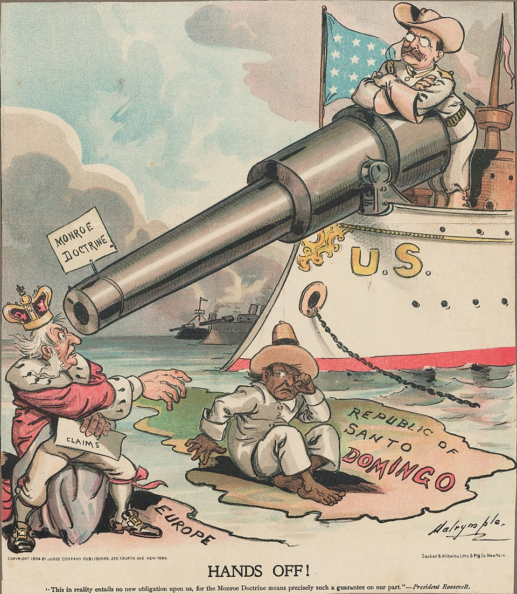
« De la domination directe au soft power : l'influence des États-Unis persiste, mais change de forme. »
01 · Contexte géopolitique
Vidéo · ARTE Décryptage
Amérique latine : avec Trump, retour de la doctrine Monroe
Complément à la slide précédente : comment Washington réactive une logique d'influence hémisphérique sous la présidence Trump.
Influence politique sans imposition de régime. Présence militaire limitée (le Venezuela fait exception).
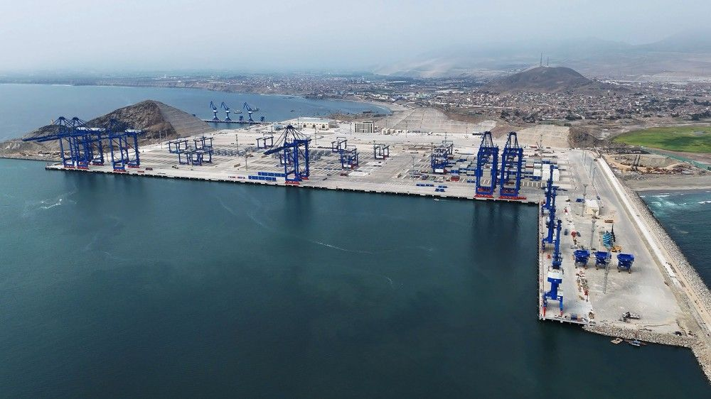
01 · Contexte géopolitique
Vidéo · CNBC
Why China has its eye on Latin America
Complément à la slide précédente : commerce ($450 Md en 2021), investissements par pays (Brésil, Pérou, Chili…), partenariat « all weather » avec le Venezuela, Belt and Road, télécoms et station spatiale en Argentine.
La Chine, partenaire commercial · les États-Unis, investisseur et pourvoyeur de technologie. La Chine progresse, l'influence américaine décline.
COMPÉTITION GÉOPOLITIQUE
RCEP vs USMCA (intégration régionale). Taiwan, sanctions russo-européennes, alignements diplomatiques.
Un choix difficile pour l'AL
Dépendance commerciale à la Chine vs valeurs démocratiques occidentales. Cas Argentine : Milei promit d'ignorer la Chine… avant de collaborer.
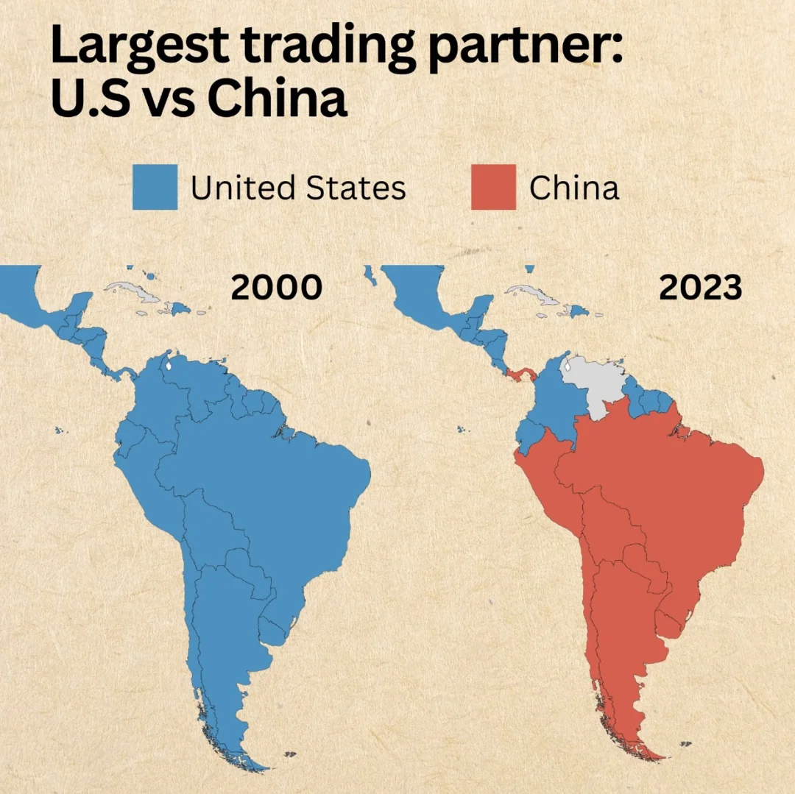
01 · Contexte géopolitique
Vidéo · Analyse géopolitique
The Hidden Costs of China's Influence in Latin America and the Caribbean
Complément à la rivalité Chine–États-Unis : engagements économiques, diplomatiques et sécuritaires de Pékin en ALC et leur lien possible avec le recul démocratique observé dans la région.
Surtout au Venezuela et au Nicaragua : armements et entraînement militaire.
Influence diplomatique
Via la diplomatie multipolaire (BRICS, ONU). Impact économique bien moindre que la Chine ou les États-Unis.
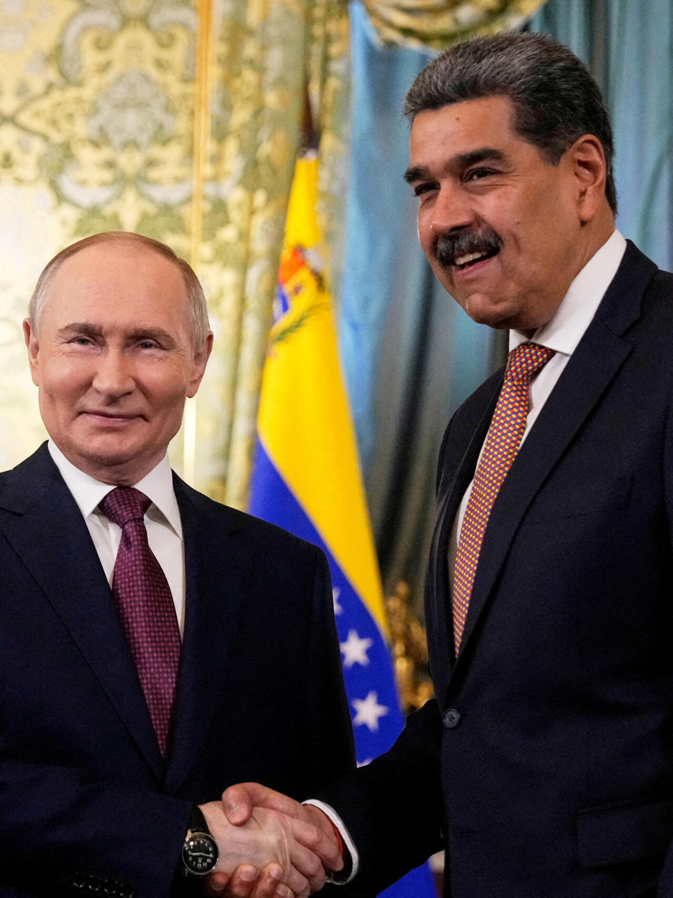
« Tendance : une voix alternative aux puissances occidentales. »
01 · Contexte géopolitique
Vidéo · ARTE
USA et Venezuela : comprendre la doctrine Monroe
Éclairage sur le lien entre doctrine Monroe, pression américaine et crise vénézuélienne en dialogue avec la présence russe évoquée à la slide précédente.
Lula, Petro, Castillo. Mais populisme, fragmentation et polarisation extrême.
2025–2026
Nouveau cycle électoral
De nouvelles élections, encore plus polarisées.
Lula · Brésil
Bolsonaro · Brésil
Chávez · Venezuela
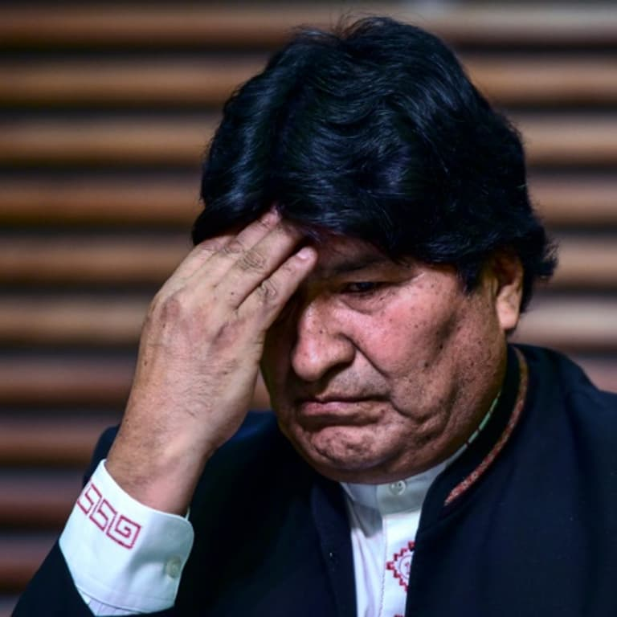
Morales · Bolivie
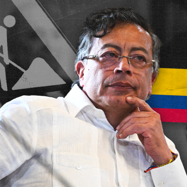
Petro · Colombie
Mujica · Uruguay
Castillo · Pérou
Fujimori · Pérou
Boric · Chili
Milei · Argentine
De la Espriella · Colombie
01 · Contexte géopolitique
Inégalités : une structure fondamentale
34 %
des revenus captés par les 10 % les plus riches
≈ 27 % / 10 %
de la population en pauvreté / en extrême pauvreté
Amérique latine
Région la plus inégalitaire après l'Afrique subsaharienne. Le Brésil, le Chili et l'Amérique centrale affichent des Gini parmi les plus élevés au monde.
Des conséquences en chaîne
Protestation sociale
Grèves et manifestations récurrentes : Chili 2019, Pérou 2022–2023, Équateur 2022.
Criminalité
Inégalités nourrissent extorsion, narcotrafic et violence urbaine dans les bidonvilles.
Migrations forcées
7 M+ de déplacés : Venezuela, Honduras, Haïti en tête de liste.
Populismes
Fracture sociale exploitable par les extrêmes, gauche et droite confondues.
01 · Contexte géopolitique
Indice de Gini par pays (1990–2020)
Au-dessus de 50
Entre 45 et 50
Entre 40 et 45
Entre 35 et 40
Entre 30 et 35
En dessous de 30
Pas de données
01 · Contexte géopolitique
Identités et tensions
Héritage colonial
Clivages raciaux et ethniques (Indiens, Métis, Afro-descendants, Blancs) et discrimination systémique.
« Des conflits locaux complexes, pas simplement gauche contre droite. »
01 · Contexte géopolitique
Changement climatique : amplificateur de crises
Une région très vulnérable
Amazonie, Andes, Caraïbes. Sécheresses, inondations, déplacements de population et compétition pour l'eau et la terre.
Cas Pérou
Glaciers andins : ≈ −56 % de superficie en six décennies. Stress hydrique pour l'agriculture et les villes. Enjeu : l'énergie hydroélectrique.
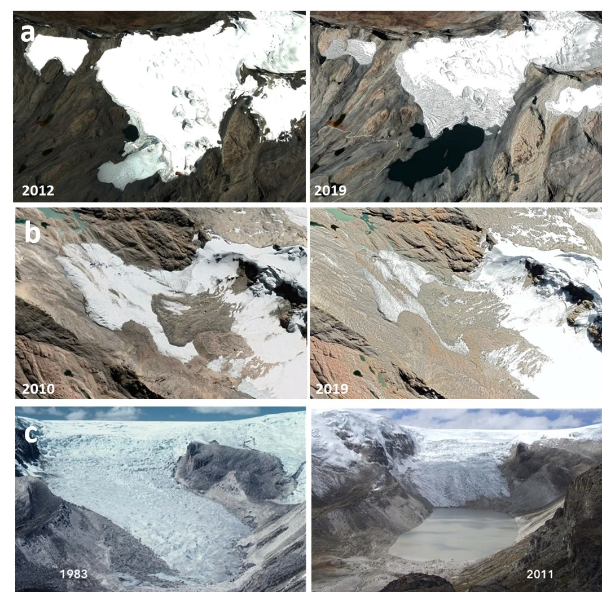
01 · Contexte géopolitique
Vidéo · ARTE
L'Amérique latine sous la menace climatique
Complément à la slide précédente : sécheresses, inondations, recul des glaciers et vulnérabilité des populations face au changement climatique en Amérique latine.
L'empire Tawantinsuyu unifie les Andes par routes, langue (quechua) et culte du Soleil. Administration centralisée, redistribution des récoltes : héritage identitaire encore vivant chez les communautés indigènes.
2 · CONQUÊTE
1533–1821
Pizarro capture Atahualpa, détruit Cuzco. Trois siècles de vice-royauté : mines d'argent de Potosí, encomienda, hiérarchie raciale (mestizaje) qui structure encore les inégalités sociales.
3 · RÉPUBLIQUE
1821 →
Indépendance de Bolívar, puis oligarchie foncière au pouvoir. Boom du guano (XIXᵉ), pétrole et minéraux au XXᵉ siècle. Pauvreté rurale chronique et fracture côte/intérieur : socle des crises contemporaines.
03 · Le Pérou
XXᵉ siècle : autoritarisme et guerre interne
Dictatures militaires
1968–1975 : Velasco Alvarado (gauche militaire) réforme agraire, nationalisation des ressources. 1975–1980 : retour instable à la démocratie.
Fujimori (1990–2000)
Élu, puis autogolpe en 1992 : dissolution du Congrès. Aide militaire US. Répression sévère.
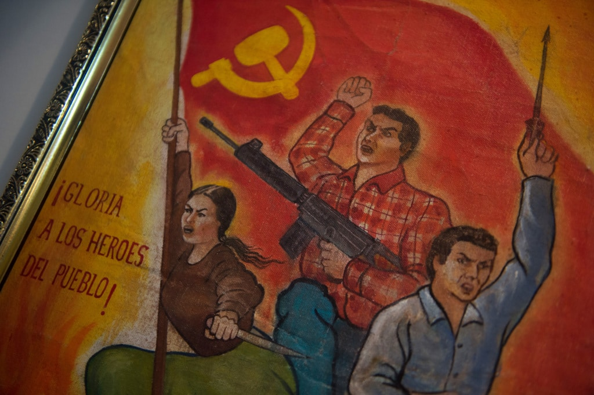
75 000 morts dans le conflit Sendero Luminoso vs armée. Fujimori fuit en 2000, réfugié au Japon.
03 · Le Pérou
Une transition difficile (2001–2016)
2001–2006
Alejandro Toledo
Retour démocratique, mais corruption (Odebrecht). En fuite en 2023, extradé en 2024.
2006–2011
Alan García
Président à deux reprises (1985, 2006). Impliqué dans Odebrecht, suicide en prison en 2019.
2011–2016
Ollanta Humala
Nationaliste, proche de Chávez. Corruption (Odebrecht), emprisonné en 2025.
Un pattern : chaque président corrompu, puis poursuivi par le suivant.
03 · Le Pérou
2016–2022 : de la crise Odebrecht à l'autogolpe
2016–18
2018–20
nov. 20
2020–21
2021–22
PPK Odebrecht
Vizcarra COVID · destitué
Merino 60+ morts
Sagasti transitoire
Castillo autogolpe
1 · 2016–2018
P. P. Kuczynski
Banquier néolibéral élu de justesse. Le scandale Odebrecht (pots-de-vin, financement occulte) le force à démissionner : premier président à tomber pour corruption systémique.
2 · 2018–2020
Martín Vizcarra
Vice-président qui succède à PPK. Confinement COVID parmi les plus stricts au monde. Destitué en 2020 par un Congrès hostile, lui-même accusé de corruption.
3 · NOV. 2020
Manuel Merino
Président du Congrès nommé à la hâte. Manifestations massives à Lima : 60+ morts en une semaine. Démission forcée : symbole de la colère citoyenne face aux coups de force institutionnels.
4 · 2020–2021
Francisco Sagasti
Ingénieur et technocrate, président « transitoire » chargé de restaurer la légitimité. Organise les élections d'avril 2021 dans un pays fracturé et épuisé par la pandémie.
5 · 2021–2022
Pedro Castillo
Syndicaliste rural élu de justesse face à Fujimori. Gouvernement instable (5 premiers ministres en 18 mois). Le 7 décembre 2022, tente de dissoudre le Congrès : l'armée refuse, il est arrêté pour sédition.
7 décembre 2022 : autogolpe manqué
Castillo dissout le Congrès et appelle à une « nouvelle constitution ». L'armée et la police refusent de le suivre : arrêté en quelques heures, emprisonné pour sédition. Dina Boluarte lui succède.
03 · Le Pérou
Dina Boluarte (2022–2025)
La vice-présidente devient présidente
Médecin, peu d'expérience politique. Rejetée à la fois par les castillistes et par la droite.
Un gouvernement chaotique
3 années d'instabilité et de protestation chronique (« Boluarte, dimite »). Scandales de corruption. La sécurité, priorité nº1.
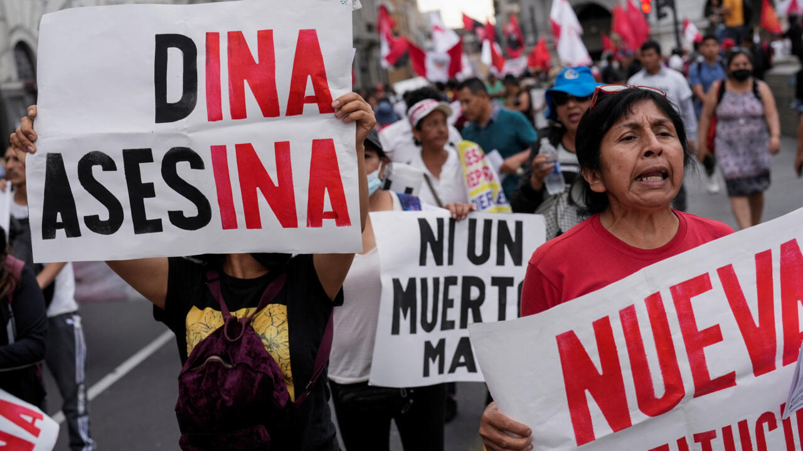
Destitution : 10 octobre 2025
Le Congrès vote sa destitution par 123 voix pour « incapacité morale permanente » corruption et mauvaise gestion de la sécurité.
Succession
José Jerí devient président par intérim jusqu'aux élections d'avril 2026.
03 · Le Pérou
Élections 2026 : Keiko Fujimori élue
Le scrutin
1ᵉʳ tour les 12–13 avril (35 candidats), 2ᵈ tour le 7 juin 2026. Retour à un Congrès bicaméral (Sénat + Chambre des députés).
Résultat serré
ONPE : Fujimori 50,135 % vs Sánchez 49,865 % 49 641 voix d'écart. JNE proclame le 3 juillet 2026.
1ʳᵉ femme élue présidente
4ᵉ candidature. Investiture le 28 juillet 2026. Droite dure : réalignement sur Washington et durcissement sécuritaire.
50,135 %
des voix au 2ᵈ tour 9ᵉ présidence en 10 ans.
03 · Le Pérou
Économie : la dépendance minière
10 % PIB
et 60 %+ des exportations = secteur minier
2ᵉ mondial
producteur de cuivre (12 % de l'output global)
4,7 M t
de lithium (plateau Macusani) très convoité
CUIVRE
Prix volatil
2ᵉ producteur mondial. Grandes mines : Toquepala, Antamina, Cerro Verde. L'économie péruvienne suit le cours du cuivre.
LITHIUM
Nouvelle ruée
4,7 M t sur le plateau Macusani. Batteries EV et renouvelables : rivalité géopolitique Chine / USA qui s'intensifie.
OR & ARGENT
2ᵉ producteur d'argent
Or : exploitation légale et illégale (orpaillage en Amazonie). Argent : filière industrielle et exportations majeures.
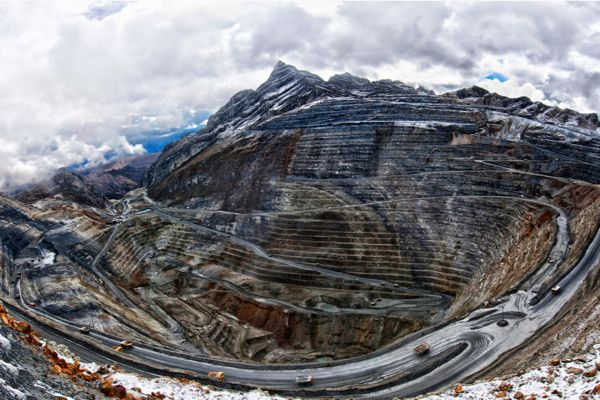
03 · Le Pérou
Économie : agriculture et pêche
AGRICULTURE
~25 % des emplois
Café, cacao, fruits exotiques (avocats, myrtilles). Petits producteurs andins très pauvres. Irrigation dépendante des glaciers.
PÊCHE
2ᵉ mondial
Après la Chine. Farine de poisson exportée. Effondrement des stocks (surpêche, El Niño, climat).
TENSION
Mine vs paysan
La mine génère des revenus mais peu d'emplois ; l'agriculture, beaucoup d'emplois mais de bas salaires. Compétition pour l'eau.
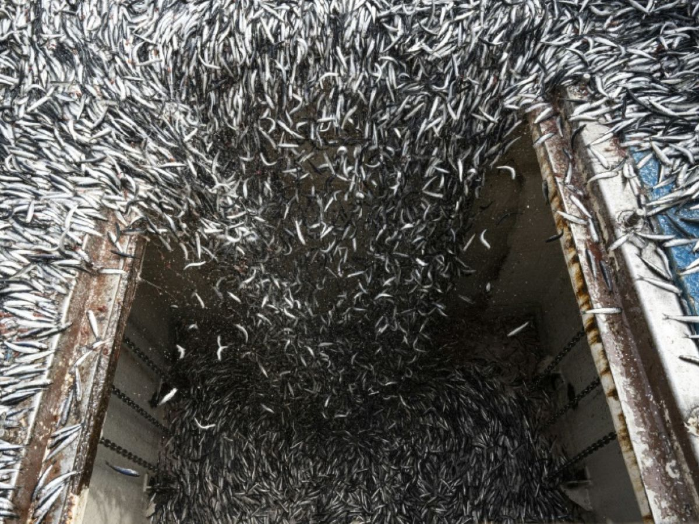
03 · Le Pérou
Crise sécuritaire : les chiffres
≈ 2 500
homicides en 2024 (≈ 6 / 100k hab.)
+36 %
d'homicides entre 2023 et 2024
20 000+
extorsions signalées (jan.–sept. 2025, +29 %)
L'extorsion, fléau nº1
Surtout le secteur des transports et le petit commerce. Enlèvements moins fréquents mais ciblés (petits entrepreneurs, transporteurs).
66 %
des Péruviens citent la criminalité comme problème nº1 (Ipsos 2025).
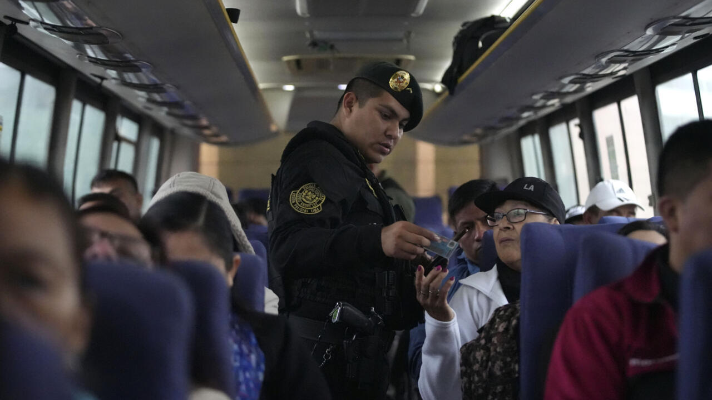
03 · Le Pérou
Zones rouges : où ne pas aller
VRAEM
Accès interdit
Vallée des rios Apurímac, Ene et Mantaro (Junín, Ayacucho, Huancavelica, Cusco). État d'urgence, production de coca, restes du Sendero.
Bloques del Centro. Drogues, extorsion, jeu illégal. Réseaux de prison (Sendero) vs indépendants.
CARTELS ÉTRANGERS
Sinaloa & Brésiliens
Cartel de Sinaloa (approvisionnement fentanyl), présence dominante brésilienne (recrutement, distribution).
GUÉRILLAS
Colombiens
ELN vs dissidents des FARC.
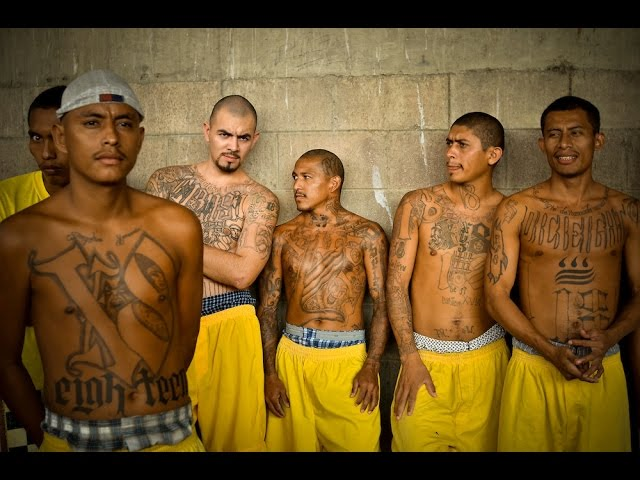
Impact : des violences croisées pour le contrôle des territoires et des routes.
03 · Le Pérou
Ressources naturelles & conflits
Mines vs communautés
Antamina : protestations autochtones. Toquepala : litiges eau/pollution. Orpaillage illégal en Amazonie : le mercure pollue les rivières.
Lithium : nouvelle ruée
Multinationales sur Macusani. Craintes : eau, pollution, profit peu localisé. Enjeu Chine (Tesla/batteries) vs USA.
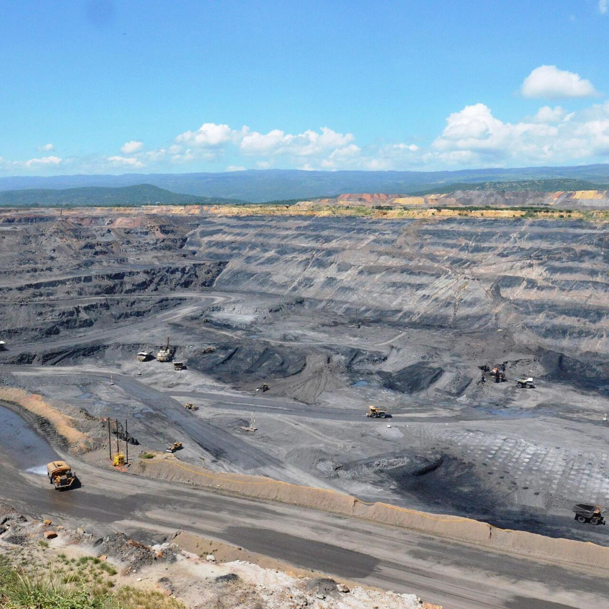
L'eau, enjeu majeur
Glaciers −50 % depuis 1970. Mines gourmandes en eau, paysans en manque → émeutes. Lima : 10 M hab. en tension hydrique.
03 · Le Pérou
Vidéo · Documentaire
Las Huellas Del Cerrejón
Documentaire sur la plus grande mine de charbon à ciel ouvert du monde, en Colombie. Témoignages de communautés qui vivent au pied du Cerrejón : la « minería responsable » a asséché les eaux du département et plongé ses habitants dans la tristesse et le désespoir, mais ils restent unis pour défendre la terre où ils sont nés.